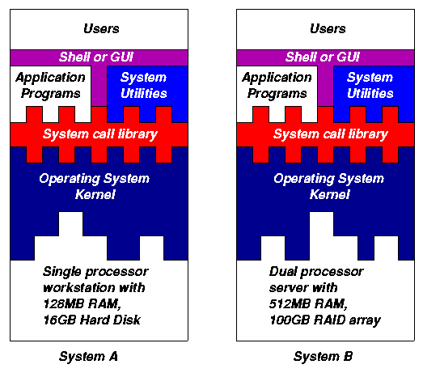
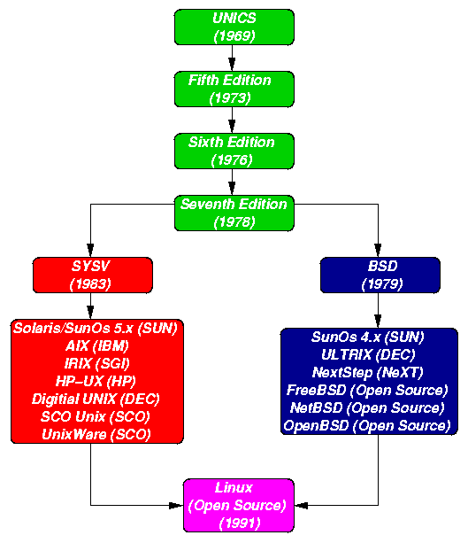

1. Introduction to UNIX
1.1 Objectives
This lecture covers:
- The concept of an operating system.
- The internal architecture of an operating system.
- The evolution of the UNIX operating system into two broad schools (BSD and SYSV) and the development of Linux, a popular open source operating system.
- The architecture of the Linux operating system in more detail.
- How to log into (and out of) UNIX and change your password.
- The general format of UNIX commands.
1.2 What is an Operating System?
An operating system (OS) is a resource manager.
It takes the form of a set of software routines that allow users and application
programs to access system resources (e.g.the CPU, memory, disks, modems, printers
network cards etc.) in a safe, efficient and abstract way.
For example, an OS ensures safeaccess
to a printer by allowing only one application program to send data directly
to the printer at any one time. An OS encourages efficient use
of the CPU by suspending programs that are waiting for I/O operations to
complete to make way for programs that can use the CPU more productively.
An OS also provides convenient
abstractions(such as files rather than disk locations) which isolate
application programmers and users from the details of the underlying hardware.

Fig. 1.1: General operating system architecture
Fig. 1.1 presents the architecture of a typical operating
system and shows how an OS succeeds in presenting users and application
programs with a uniform interface without regard to the details of the
underlying hardware.
We see that:
-
The operating system kernel
is in direct control of the underlying hardware. The kernel provides low-level
device, memory and processor management functions (e.g. dealing with interrupts
from hardware devices, sharing the processor among multiple programs, allocating
memory for programs etc.)
-
Basic hardware-independent kernel services are exposed to
higher-level programs through a library of system
calls (e.g. services to create a file,
begin execution of a program, or open a logical network connection to another
computer).
-
Application programs (e.g. word processors, spreadsheets) and
system utility programs (simple but useful application
programs that come with the operating system, e.g. programs which find
text inside a group of files) make use of system calls. Applications and
system utilities are launched using a shell
(a textual command line interface) or a graphical
user interface that provides direct user
interaction.
Operating systems (and different flavours of the same operating
system) can be distinguished from one another by the system calls, system
utilities and user interface they provide, as well as by the resource scheduling
policies implemented by the kernel.
1.3 A Brief History of UNIX
UNIX has been a popular OS for more than two
decades because of its multi-user, multi-tasking environment, stability,
portability and powerful networking capabilities. What follows here is
a simplified history of how UNIX has developed (to get an idea for how
complicated things really are, see the web site
http://www.levenez.com/unix/).

Fig. 1.2: Simplified UNIX FamilyTree
In the late 1960s, researchers from General Electric,
MIT and Bell Labs launched a joint project to develop an ambitious multi-user,
multi-tasking OS for mainframe computers known as MULTICS (Multiplexed
Information and Computing System). MULTICS failed (for
some MULTICS enthusiasts "failed" is perhaps too
strong a word to use here), but it did inspire Ken
Thompson, who was a researcher at Bell Labs, to have a go at writing a
simpler operating system himself. He wrote a simpler version of MULTICS
on a PDP7 in assembler and called his attempt UNICS (Uniplexed Information
and Computing System). Because memory and CPU power were at a premium in
those days, UNICS (eventually shortened to UNIX) used short commands to
minimize the space needed to store them and the time needed to decode them
- hence the tradition of short UNIX commands we use today, e.g. ls,
cp, rm, mv etc.
Ken Thompson then teamed up with Dennis Ritchie, the author
of the first C compiler in 1973. They rewrote the UNIX kernel in C - this
was a big step forwards in terms of the system's portability - and released
the Fifth Edition of UNIX to universities in 1974. The Seventh Edition,
released in 1978, marked a split in UNIX development into two main branches:
SYSV (System 5) and BSD (Berkeley Software Distribution). BSD arose from
the University of California at Berkeley where Ken Thompson spent a sabbatical
year. Its development was continued by students at Berkeley and other research
institutions. SYSV was developed by AT&T and other commercial companies.
UNIX flavours based on SYSV have traditionally been more conservative,
but better supported than BSD-based flavours.
The latest incarnations of SYSV (SVR4 or System 5 Release
4) and BSD Unix are actually very similar. Some minor differences are to
be found in; file system structure, system utility names and options
and system call libraries as shown in Fig 1.3.
| Feature |
Typical SYSV |
Typical BSD |
| kernel name |
/unix |
/vmunix |
| boot init |
/etc/rc.d directories |
/etc/rc.* files |
| mounted FS |
/etc/mnttab |
/etc/mtab |
| default shell |
sh, ksh |
csh, tcsh |
| FS block size |
512 bytes -> 2k |
4k -> 8k |
| print subsystem |
lp, lpstat, cancel |
lpr, lpq, lprm |
| echo command (no new line) |
echo "\c" |
echo -n |
| ps command |
ps -fae |
ps -aux |
| multiple wait syscalls |
poll |
select |
| memory access syscalls |
memset, memcpy |
bzero, bcopy |
Fig. 1.3: Differences between SYSV and BSD
Linux is a free open source UNIX OS for PCs that was originally
developed in 1991 by Linus Torvalds, a Finnish undergraduate student. Linux
is neither pure SYSV or pure BSD. Instead, incorporates some features from
each (e.g. SYSV-style startup files but BSD-style file system layout) and
aims to conform with a set of IEEE standards called POSIX (Portable Operating
System Interface). To maximise code portability, it typically supports
SYSV, BSD and POSIX system calls (e.g.
poll, select, memset, memcpy,
bzero and bcopy are all supported).
The open source nature of Linux means that the source
code for the Linux kernel is freely available so that anyone can add features
and correct deficiencies. This approach has been very successful and what
started as one person's project has now turned into a collaboration of
hundreds of volunteer developers from around the globe. The open source
approach has not just successfully been applied to kernel code, but also
to application programs for Linux (see e.g. http://www.freshmeat.net).
As Linux has become more popular, several different development
streams or distributions have emerged, e.g. Redhat, Slackware, Mandrake,
Debian, and Caldera. A distribution comprises a prepackaged kernel, system
utilities, GUI interfaces and application programs.
Redhat is the most popular distribution because it has
been ported to a large number of hardware platforms (including Intel, Alpha,
and SPARC), it is easy to use and install and it comes with a comprehensive
set of utilities and applications including the X Windows graphics system,
GNOME and KDE GUI environments, and the StarOffice suite (an open source
MS-Office clone for Linux).
1.4 Architecture of the Linux Operating System
Linux has all of the components of a typical
OS (at this point you might like to refer back to Fig 1.1):
- Kernel
The Linux kernel includes device driver support for a large number of PC hardware
devices (graphics cards, network cards, hard
disks etc.), advanced processor and memory management features, and support
for many different types of filesystems (including DOS floppies and the
ISO9660 standard for CDROMs). In terms of the services that it provides
to application programs and system utilities, the kernel implements most
BSD and SYSV system calls, as well as the system calls described in the
POSIX.1 specification.
The kernel (in raw binary form that is loaded directly
into memory at system startup time) is typically found in the file /boot/vmlinuz,
while the source files can usually be found in /usr/src/linux.The latest
version of the Linux kernel sources can be downloaded from http://www.kernel.org.
- Shells and GUIs
Linux supports two forms of command input: through textual
command line shells similar to those found on most UNIX systems (e.g. sh
- the Bourne shell, bash - the Bourne again shell and csh - the C shell)
and through graphical interfaces (GUIs) such as the KDE and GNOME window
managers. If you are connecting remotely to a server your access will typically
be through a command line shell.
- System Utilities
Virtually every system utility that you would expect
to find on standard implementations of UNIX (including every system utility
described in the POSIX.2 specification) has been ported to Linux. This
includes commands such as ls, cp, grep, awk, sed, bc, wc, more,
and so on. These system utilities are designed to be powerful tools that
do a single task extremely well (e.g. grep finds text inside files
while wc counts the number of words, lines and bytes inside a
file). Users can often solve problems by interconnecting these tools instead
of writing a large monolithic application program.
Like other UNIX flavours, Linux's system utilities also
include server programs called daemons
which provide remote network and administration services (e.g. telnetd
and sshd provide remote login facilities, lpd provides
printing services,
httpd serves web pages, crond runs
regular system administration tasks automatically). A daemon (probably
derived from the Latin word which refers to a beneficient spirit who watches
over someone, or perhaps short for "Disk And Execution MONitor") is usually
spawned automatically at system startup and spends most of its time lying
dormant (lurking?) waiting for some event to occur.
- Application programs
Linux distributions typically come with several useful
application programs as standard. Examples include the emacs editor,
xv
(an image viewer), gcc (a C compiler), g++ (a C++ compiler),
xfig
(a drawing package), latex (a powerful typesetting language) and
soffice
(StarOffice, which is an MS-Office style clone that can read and write
Word, Excel and PowerPoint files).
Redhat Linux also comes with rpm, the Redhat
Package Manager which makes it easy to install and uninstall application
programs.
1.5 Logging into (and out of) UNIX Systems
Text-based (TTY) terminals:
When you connect to a UNIX computer remotely (using telnet)
or when you log in locally using a text-only terminal, you will see the
prompt:
login:
At this prompt, type in your usename and press the enter/return/
key. Remember that UNIX is case sensitive (i.e. Will, WILL and will are
all different logins). You should then be prompted for your password:
login: will
password:
Type your password in at the prompt and press the enter/return/
key. Note that your password will not be displayed on the screen as you
type it in.
If you mistype your username or password you will get
an appropriate message from the computer and you will be presented with
the login: prompt again. Otherwise you should be presented with
a shell prompt which looks something like this:
$
To log out of a text-based UNIX shell, type "exit" at
the shell prompt (or if that doesn't work try "logout"; if that doesn't
work press ctrl-d).
Graphical terminals:
If you're logging into a UNIX computer locally, or if
you are using a remote login facility that supports graphics, you might
instead be presented with a graphical prompt with login and password fields.
Enter your user name and password in the same way as above (N.B. you may
need to press the TAB key to move between fields).
Once you are logged in, you should be presented with a
graphical window manager that looks similar to the Microsoft Windows interface.
To bring up a window containing a shell prompt look for menus or icons
which mention the words "shell", "xterm", "console" or "terminal emulator".
To log out of a graphical window manager, look for menu
options similar to "Log out" or "Exit".
1.6 Changing your password
One of the things you should do when you log
in for the first time is to change your password.
The UNIX command to change your password is passwd:
$ passwd
The system will prompt you for your old password, then
for your new password. To eliminate any possible typing errors you have
made in your new password, it will ask you to reconfirm your new password.
Remember the following points when choosing your password:
-
Avoid characters which might not appear on all keyboards,
e.g. '£'.
-
The weakest link in most computer security is user passwords
so keep your password a secret, don't write it down and don't tell it to
anyone else. Also avoid dictionary words or words related to your personal
details (e.g. your boyfriend or girlfriend's name or your login).
-
Make it at least 7 or 8 characters long and try to use a
mix of letters, numbers and punctuation.
1.7 General format of UNIX commands
A UNIX command line consists of the name of a
UNIX command (actually the "command" is the name of a built-in shell command,
a system utility or an application program) followed by its "arguments"
(options and the target filenames and/or expressions). The general syntax
for a UNIX command is
$ command -options targets
Here command can be though of as a verb, options
as an adverb and targets as the direct objects of the verb. In the
case that the user wishes to specify several options, these need not always
be listed separately (the options can sometimes be listed altogether after
a single dash).
(BACK TO COURSE CONTENTS)